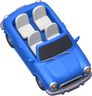
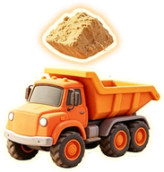

Vòng lặp lõi Jam Bus: Sandfall — bàn xe, đường vòng, tranh cát
*Nguồn: GDD CarBoard, RingTrack, SandPainting, CarColorAllocation, FailRevive, ExtraSlot, Boosters, StarsCombo, LevelWin, LevelFlow, LevelData, PersonQueue; file level trong assets_dec/ (appendix/levels.tsv); tranh cát sandPic_*.json. Bản 41.0, Cocos2d-x C++ (libMyGame.so). Phần suy ra ghi "(suy luận)".*




1. Một ván chơi trong một đoạn
Màn hình chia ba tầng. Dưới cùng là bãi xe: 20–78 chiếc xe đỗ chéo nhau, mỗi xe có mũi tên chỉ một trong 8 hướng. Ở giữa là đường vòng khép kín có số chỗ giới hạn (mặc định 5). Trên cùng là bức tranh cát 128 × 96 ô làm bằng cát màu. Người chơi chạm một xe: nếu đường đi theo mũi tên trống, xe chạy ra khỏi bãi, lên đường vòng, chạy vòng liên tục; khi đi qua vùng hút dưới đáy tranh, xe hút cát cùng màu cho tới khi đầy rồi rời đường, trả chỗ. Tranh hết cát là thắng. Đường vòng kín chỗ mà không xe nào còn hút được thì thua.
Hai câu đố chồng lên nhau: câu đố thứ tự của dòng Parking Jam (xe nào ra được trước, xe nào bị chặn) và câu đố màu của dòng sort (màu nào đang lộ ở đáy tranh, xe màu đó đã ra được chưa). Đường vòng là bộ đệm nối hai câu đố và là nguồn áp lực duy nhất: game không có đồng hồ (LevelHUD — m8GameNotify::onTimeChange không có nơi gọi từ lõi Bus), không có giới hạn lượt chạm. Người chơi thua vì chọn sai màu chiếm chỗ, không phải vì chậm.
| Tầng | Lớp chính | Trạng thái quyết định | Thắng/thua |
|---|---|---|---|
| Bãi xe | CCubeBox, OperationLayer, GameManager | xe nào thoát được (va chạm OBB) | hết xe trên bãi là điều kiện phụ |
| Đường vòng | BusQueue::BQRingTrackCtl, BQRingCarCtl | số chỗ trống, xe nào đang ở vùng hút | kín chỗ + kẹt → thua |
| Tranh cát | SandUpperController, SandPainting, SandCollectionJob | màu ở N hàng đáy | hết cát → thắng |
2. Bãi xe: câu đố thứ tự
Mỗi ván, GameManager::createGame nạp một file bàn configs/level{N}-上方保留更多空间.json (LevelData; hai biến thể «42分组/48分组» có trong APK nhưng không có tên trong libMyGame.so). File chỉ cho vị trí, hướng, cỡ xe và một màu khuôn; màu thật được tính lại lúc vào level (mục 5).
- 8 hướng:
direction0–7 → góc 0°, −30°, −90°, −150°, 180°, 150°, 90°, 30°. Bốn hướng dùng nhiều nhất là 0/4/6/2 (921/793/756/693 xe trong 57 file). - 3 cỡ xe:
type0/1/2 = 4/6/10 «viên» (bulletCount), quyết định sức chứa cát. 57 file dùng: 1.128 xe 4 viên, 1.312 xe 6 viên, 1.028 xe 10 viên. - Chạm xe (
OperationLayer::onTouch): game xin chỗ trên đường vòng trước (BQGameSystem::occupySlot). Hết chỗ → hiện tip «车位已满» (đầy chỗ) hoặc «解锁更多车位!» (mở thêm chỗ) tuỳBQGameSystem::canExpandRingCapacity, xe không nhúc nhích. Còn chỗ → quét hình chữ nhật xoay (RotatedRect::isOBBOverlap) theo mũi tên tới mép bàn; trống thìCCubeBox::moveToRingEntrycho xe chạy 1.800 đơn vị/giây tới cửa đường vòng; bị chặn thì xe chạy tới chỗ va, rung (CCubeBox::playCollisionAnim) và quay về, chỗ đã giữ được trả lại.
Luật «xin chỗ trước» là chi tiết thiết kế quan trọng: chạm nhầm một xe bị chặn không mất gì (xe quay về, chỗ được hoàn), nhưng chạm một xe thoát được mà sai màu thì xe đó chiếm chỗ cho tới khi hút đủ cát. Lỗi bị phạt là lỗi về màu, không phải lỗi về đường đi. Người mới vì vậy có thể "dò đường" bằng cách chạm thử mà không bị trừng phạt.
Mật độ bàn của 25 file mà nhóm thường dùng (levels.tsv, biến thể «上方保留更多空间»):
| Level | Xe | Viên | Màu | Ghi chú |
|---|---|---|---|---|
| 1 | 20 | 144 | 7 | Hướng dẫn duy nhất: chạm CCubeBox0 (Tutorials) |
| 2–5 | 43–60 | 286–378 | 8 | Tăng nhanh |
| 6–25 | 40–75 (TB 58) | 272–464 (TB 378) | 7–9 | Răng cưa: L8 72 xe, L9 45; L13–14 74–75; L16/19/22 có băng tải, chỉ 40–42 xe |
| 26–57 | 55–78 (TB 65,1) | TB 426 | ~8,2 | Chỉ nhóm 49 được dùng |
Cơ chế phụ của bàn (BoardObstacles, ConveyorCave) gần như chưa bật: băng tải xuất hiện ở L16/19/22 của biến thể đang dùng; băng lớn, khoá–chìa, cọc nâng, xe đóng băng, hang xe có code và đồ hoạ nhưng mọi trường đều 0 trong 297 file. Đây là "hộp công cụ" độ khó để dành.
3. Đường vòng: bộ đệm tạo áp lực
BQRingTrackCtl::init dựng đường theo tâm đường 关卡队列路径线-宽轨道v3.json (một đường bezier), sức chứa đầu ván GameTuningParams::initialTrackCapacity = 5 (6 cho nhóm người dùng 2 và 27, SandBusGameManager::createGame), trần mở rộng 10 (12 cho nhóm 27, BQGameDelegateImpl::getSlotCapacity). Xe chạy vòng với cruiseSpeed 180 (suy luận), tỉ lệ 0,9.
Sức chứa cát của xe = ⌊T² · 25 / 7⌋ × số viên, với T = sands.sands của tranh (BQRingTrackCtl::execSlot). Bộ tranh mặc định có T = 2 → 14 đơn vị mỗi viên → xe 4/6/10 viên chứa 56/84/140 đơn vị. Tranh «多色-128列» và 3D có T = 1 → chỉ 3 đơn vị/viên. Một xe chỉ rời đường khi đầy (BQRingCarCtl::isFull); xe ngồi kín hành khách tăng theo lượng cát (BQRingCarCtl::fillFromSand) — người chỉ còn là trang trí của chế độ hàng người cũ.
Ô VIP (id 101) nằm ngoài sức chứa: booster Gậy phép đưa một xe bất kỳ vào đó. Nhóm 47/48 có VIP không giới hạn (isUnlimitedVipCarEnabled).
Đường vòng biến bài toán màu thành bài toán quản lý tồn kho: mỗi xe trên đường là một "lệnh chờ" màu. Năm chỗ nghĩa là người chơi được phép cược sai tối đa vài lần trước khi kẹt; mỗi lần hồi sinh nới thêm một chỗ (mục 6).
4. Tranh cát: mục tiêu nhìn thấy được
SandBusGameManager::createGame đọc tranh qua sl::SLConfigService::parseLevelConfigData(lsMeta.json, chỉ số, "0", …): lưới 128 × 96 (12.288 ô, mọi ô đều có cát; bản 3D 256 × 192), hiển thị rộng 1.024 px, bảng 10 màu mặc định (lsMeta.global.colors). Mỗi khung:
- Cứ 0,02 giây (0,03 cho nhóm 17, 21),
SandUpperController::_runSandCollectiontìm các xe đang ở vùng khớp còn chỗ; SandCollectionJob::runchọn ô cát cùng màu trong 6 hàng đáy (suctionRowCount; 10/8/5 ở một số nhóm) gần cột của xe, xoá trễ và sinh hạt bay vào xe;SandPainting::updatechạy trọng lực: cát phía trên rơi xuống, trượt sườn — màu ở đáy thay đổi liên tục.
Thắng khi SLSandPaintingAdapter::isSandsClear (callback setVictoryCb). Tiến độ gửi analytics là getSandCollectedPercent = ⌈đã hút · 100 / ban đầu⌉.
Lựa chọn "tranh pixel vơi dần" thay cho "hàng người" của Jam Bus gốc có hai giá trị: (1) mục tiêu và tiến độ hiện ngay trên màn — không cần đếm; (2) trọng lực làm trạng thái khó đoán trước vài bước: hút một cột có thể làm màu khác sụp xuống đáy, mở ra cơ hội hoặc chặn đường. Âm thanh Sound_SandBus_Collect có tham số Flowrate = số hạt / 8 (flowrateDivisor), nên tiếng cát chảy mạnh dần khi nhiều xe hút cùng lúc — phản hồi cảm giác cho combo.
Tranh được tạo theo nhịp 5 level: ở bộ 225 tranh mặc định, trường difficulty lặp mẫu 1-1-1-2-3 (7/7/7/8/9 màu; tên file kiểu pet_7c_01_128x96…). Trường này không đi vào đường độ khó của khung (bài 02) nhưng chính số màu đã tạo răng cưa độ khó.
5. Phân màu xe: cùng bàn, ván khác
Bàn xe và tranh là hai dữ liệu độc lập. SandBusGameManager::_applyDynamicCarAllocation:
- đếm màu của 10% cát đáy (
frontSegmentPercent; 20% cho nhóm 40) và 30% (midSegmentPercent) bằng_computeFrontMidSandCounts; - tính số bước thoát của từng xe (
OperationLayer::calculateAllBoxesMoveSteps→realOutStep); SandBusCarAllocator::allocategán màu cát cho từng xe sao cho xe ra được sớm nhận màu đang lộ ở đáy; bộ sinh ngẫu nhiên lấy từ/dev/urandom;- thất bại thì dùng ánh xạ tĩnh màu khuôn → màu tranh (
_applyParkingBoxSandColorIds,_bindParkingBoxesToSandLevelColors). Màu được tô bằng shaderShaderTintHelper_SoftLightMultiply.
Hệ quả thiết kế (suy luận từ việc dùng /dev/urandom và gọi lại mỗi lần createGame): mỗi lần chơi lại, màu xe được chia lại. Người chơi không thể học thuộc lời giải của một level; một lần thử xấu có thể được "cứu" bằng lần thử sau. Đổi lại, độ khó của cùng một level dao động giữa các lần thử — điều cần đo bằng analytics (boarded_percent, sand_collected_percent gửi ở m8GameBoardTemplate::onSucceed). Booster Xáo màu chạy lại đúng bộ phân màu này cho các xe còn trên bãi.
6. Thua, hồi sinh, bỏ cuộc
Điều kiện thua (chế độ cát): SandUpperController::_checkSandJamFail thấy đường vòng kín và không còn tiến triển hút cát quá 0,5 giây (3 giây ân hạn sau khi dùng booster) → BQGameSystem::triggerGameFail → BQGameControl::forceGameFail hiện chữ «GU_游戏内_车位已满». Hằng 3,0 giây trong BQGameControl::checkGameFail thuộc nhánh hàng người cũ (isMatchFailCondition so màu với người đầu hàng); theo GDD PersonQueue nhánh này bị bỏ qua khi setSandFillMode(true), nên GDD FailRevive ghi «3 giây» là lẫn hai chế độ — vẫn nên playtest để chốt 0,5 s.
Chuỗi hồi sinh (khung m8, m8GameNotify::onBeforeFailTasks): banner loại thua → popup hồi sinh (PrefailSystem::createFailWindow):
| Lựa chọn | Giá | Kết quả | Bằng chứng |
|---|---|---|---|
| Coin | 900 (nhóm 47: 1.300; nhóm 48: 1.800) | +1 chỗ đường vòng, chơi tiếp | getRespawnCoinCost, BQGameDelegateImpl::gameRespawn → BQGameSystem::expandRingCapacity |
Xem QC (trang LevelFail) | 0 | như trên | «复活成功，继续游戏AD» |
| Nhóm 24 | — | xoá xe trên đường + hút cát lại một lượt | SandBusGameManager::startRespawnAbsorption |
| Give up | — | chuỗi giữ chân: mất mạng + sao, mất chuỗi thắng, mất hệ số sự kiện, thẻ | PrefailSystem::createQuitTask |
Hồi sinh chỉ bấm được khi còn chỗ khoá (hasLockedSlotsForRespawn = canExpandRingCapacity): từ 5 lên 10 là tối đa 5 lần hồi sinh mỗi ván (suy luận — không thấy bộ đếm giới hạn khác), tổng  4.500 coin nếu trả bằng coin. Giá không leo thang — khác Royal Kingdom (900 → 4.900). Lý do có thể: mỗi lần hồi sinh đã tự làm ván dễ hơn (thêm chỗ vĩnh viễn trong ván), nên game không cần tăng giá để chống lạm dụng (suy luận).
4.500 coin nếu trả bằng coin. Giá không leo thang — khác Royal Kingdom (900 → 4.900). Lý do có thể: mỗi lần hồi sinh đã tự làm ván dễ hơn (thêm chỗ vĩnh viễn trong ván), nên game không cần tăng giá để chống lạm dụng (suy luận).
Từ chối hết: trừ  1 mạng, trang «Level Failed!» với Try again (
1 mạng, trang «Level Failed!» với Try again (PrequitSystem::createTryAgainWindow); đủ mạng thì chơi lại ngay. Thoát giữa ván qua menu tạm dừng đi cùng chuỗi giữ chân nhưng không có nút trả tiền (QuitRetention).
Mạng gần như không chặn: tối đa 5, hồi 1.800 giây, nhưng có sàn leastLifeCounts = 1 — khi bị trừ tới sàn, game giữ 1 mạng và hẹn tặng thêm sau 120–240 giây (LifeControl::scheduleSendGiftLife). Chỉ nhóm 43 đã từng nạp mới về 0 (Lives). Chi phí thật của một lần thua vì vậy là thời gian + chuỗi thắng + hệ số sự kiện, không phải mạng.
Popup mua chỗ riêng (BQTrackAddSlotView, 900 coin hoặc QC VideoLuckIn) có code nhưng không có nơi gọi create, và nút mở rộng trên đường vòng có thân rỗng (ExtraSlot) — ở 41.0 cách duy nhất có thêm chỗ là hồi sinh.
7. Booster trong ván
Khung m8 có 7 loại booster (Inf_data_prop::ItemType) nhưng lõi Bus chỉ ánh xạ 3 (CoreGameSystem::useBoostInGame → FlowerCoreGame::useBoostInGame):
| Booster | Mở | Hiệu ứng trong Bus | Giá khi hết | Text (.lan) |
|---|---|---|---|---|
| Búa (锤子, asset 6 → boost 1) | L3 | Chọn một xe trên đường để lấp đầy ngay | 300 coin (nhóm 46–48: 900) | «Pick a bus to fill right away» |
| Gậy phép (魔棒, asset 5 → boost 2) | L5 | Đưa xe bất kỳ vào ô VIP (bị chặn nếu VIP đã có xe) | 300 (900) | «Any Vehicle Enters the VIP Parking Space» |
| Xáo màu (时间冻结, asset 3 → boost 3) | L10 | Chia lại màu các xe trên bãi | 900 | «Rearrange the color of the vehicle» |
| Làm mới (刷新) | L5 | Không ánh xạ vào lõi Bus | 800 | text template |
Người mới có 2 cái mỗi loại. Hết hàng thì nút mở popup mua bằng coin hoặc xem QC (m8GamePropAdapter::showAddPropAD, loại QC 4). Popup chọn booster đầu trận bị tắt: PrestartSystem::createWinStreakWindow/createNoStreakWindow chỉ kết thúc task, bấm Play là vào ván ngay (PreLevel). Ba booster đầu trận (Búa đầu trận, Thêm giờ, x2 sao) vẫn được trao trong phần thưởng nhưng chỉ dùng được ở trang «Level Failed!».
8. Thắng: sao, combo, coin
Mỗi lần một xe đầy, BQGameDelegateImpl::onCarFullCollectStar thu sao qua StashManager::collect. Nếu bật combo (RedABTest::isComboEnabled), ComboStash::collect leo bậc theo Combos.json: cửa sổ giữ combo 39 giây ở bậc 1–2, rút xuống 2,3–3 giây ở bậc 25–30; mỗi lần thu được 1 →  10 sao; chữ khen «Good … Perfect». Combo thưởng nhịp tay nhanh — đúng chỗ người chơi giỏi đã tính trước vài xe.
10 sao; chữ khen «Good … Perfect». Combo thưởng nhịp tay nhanh — đúng chỗ người chơi giỏi đã tính trước vài xe.
Hết cát → m8GameProtocol::succeedGame → trang kết quả (SucceedSystem::createSuccGetReward): coin gốc theo bậc khó 20/60/100 — nhưng độ khó luôn Normal nên luôn 20 coin; nút nhân coin bằng QC có thanh trượt hệ số (bật theo RedABTest::isSucceedPageADEnable, nhóm 90 của snapshot không có); thanh «rương 5 level» (mốc = (level/5)·5+5). Sau đó game về Home (để bay vật phẩm sự kiện, mời đánh giá) hoặc vào thẳng level sau tuỳ getHowToEnterNextLevel.
Chuỗi thắng (WinStreak) cộng +10/+20/+30 giây đầu màn — một phần thưởng không có tác dụng trong Bus vì ván không có đồng hồ (suy luận từ LevelHUD). Giá trị thật của chuỗi nằm ở các hệ số sự kiện (Ice Cream Battle 1-2-4-6-10, Moco 1-5-10) và ở nỗi sợ mất chuỗi trong popup thua.
9. Level lặp lại như thế nào
| Thành phần | Số lượng | Công thức chọn | Bằng chứng |
|---|---|---|---|
| Bàn xe (nhóm thường) | 25 | N ≤ 25: N; N > 25: ((N − 6) mod 20) + 6 → lặp bàn 6–25 | GameManager::createGame |
| Bàn xe (nhóm 49) | 57 | ((N − 6) mod 52) + 6 | như trên |
| Tranh (nhóm 44 — máy VN của snapshot) | 225 | ((N − 1) mod 225) + 1 | SandBusGameManager::createGame |
| Tranh (nhóm 29 — mặc định toàn cầu) | 230 | mod 230, bộ «_25分组关卡» từ chỉ số 30 | CarColorAllocation |
| Tranh (nhóm 15/16) | 100 | bộ đa sắc 34 màu | CarColorAllocation |
Sau level 25 bàn xe quay vòng 20, tranh quay vòng 225 → cặp (bàn, tranh) chỉ lặp lại sau BCNN(20, 225) = 900 level (nhóm 29: BCNN(20, 230) = 460). Cộng thêm phân màu ngẫu nhiên mỗi lần chơi, người chơi gần như không bao giờ gặp lại cùng một ván dù nội dung gốc chỉ có 25 bàn × 225 tranh. Đây là cách sản xuất nội dung rất tiết kiệm: thay vì thiết kế hàng nghìn level, studio thiết kế hai thư viện nhỏ và để thuật toán ghép. Cái giá là đường cong độ khó phẳng sau level 25: mật độ bàn lặp răng cưa 20 level, độ khó tranh lặp nhịp 5 level, không có gì tăng dài hạn (bài 02).
10. Khung m8: lõi có thể thay
Một ván đi qua khung «m8» dùng chung của studio: m8GameSystem tạo m8GameControl với 16 adapter (Protocol, Notify, Layout, WinStreak, Pause, Board, Succeed, Fail, Stash, Status, Prop, Prefail, Prequit, 2 × Prestart, Load). Lõi Bus (FlowerCoreGame, BusQueue::*, SandPainting) chỉ nói chuyện với khung qua BQGameDelegateImpl::onGameOver → m8GameBoardTemplate. Dấu vết của các game trước nằm khắp nơi: khoá lưu goods_merge_data_center_*, bảng vật phẩm GoodsMatch道具信息.yaml, nhiệm vụ «ghép 150 cặp hàng», booster «Refresh all items» và popup hồi sinh có «Add 60 seconds / Freeze for 15 seconds» của game sort có đồng hồ. Chế độ hàng người của Jam Bus gốc (BQQueueGenerator, 9 màu người, thua sau 3 giây) vẫn được dựng nhưng tắt.
11. Nhận định
- Áp lực đến từ chỗ, không đến từ giờ. Không đồng hồ, không giới hạn lượt; một ván chỉ thua khi người chơi tự lấp đường vòng bằng màu sai. Cảm giác "thư giãn nhưng có rủi ro" hợp với tệp casual rộng.
- Lỗi đường đi miễn phí, lỗi màu bị phạt. Luật xin chỗ trước khi chạy cho phép dò thử, giữ người mới không bị phạt oan.
- Hồi sinh là van xả có trần. Mỗi lần +1 chỗ, tối đa 5 lần, giá phẳng 900 coin — dễ hiểu, dễ cân, nhưng bỏ lỡ doanh thu leo thang so với Play On kiểu Royal Kingdom.
- Nội dung ghép + phân màu ngẫu nhiên kéo dài tuổi thọ của 25 bàn × 225 tranh, nhưng làm độ khó dài hạn phẳng và mỗi lần thử khác nhau — cần đo, không thể chỉnh tay từng level.
- Phần thừa của template (booster đầu trận, Làm mới, chuỗi thắng cộng giây) là chỗ nên dọn hoặc đổi nghĩa cho hợp lõi Bus.